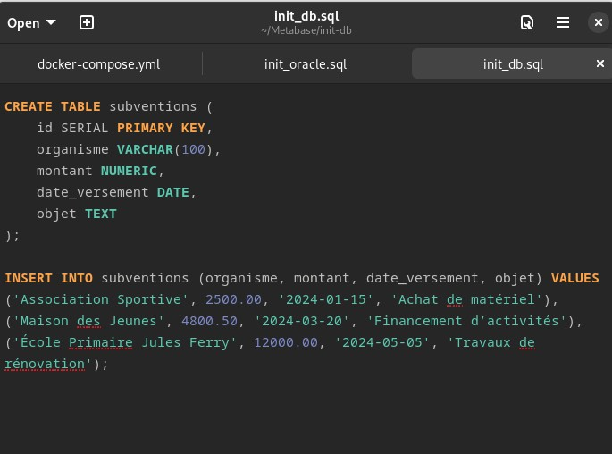
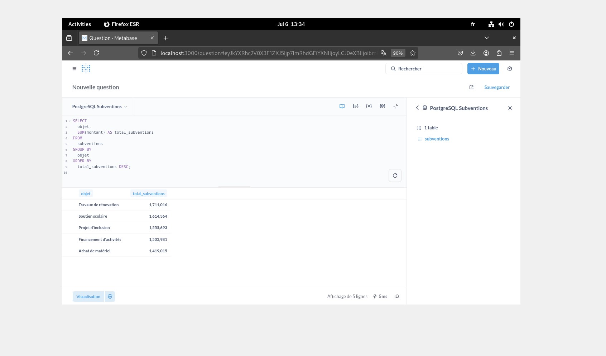
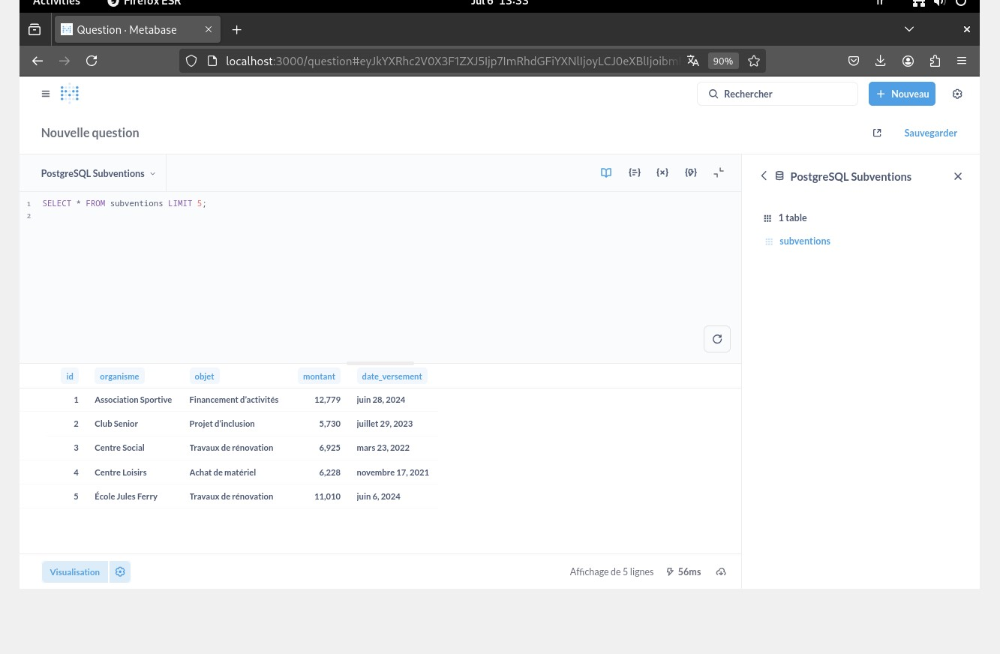
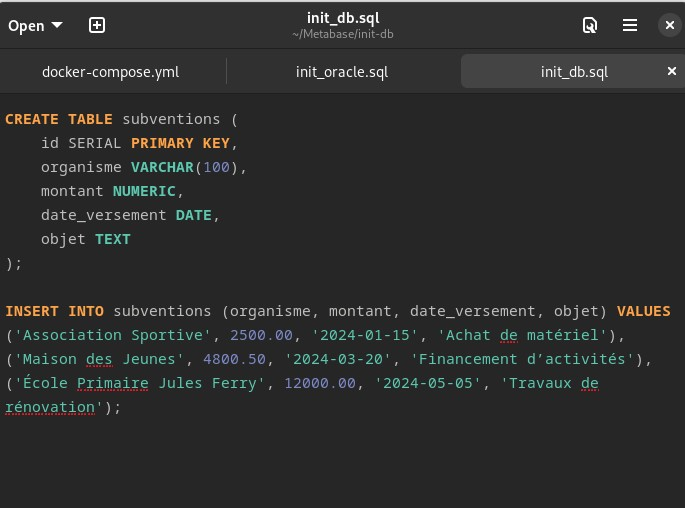
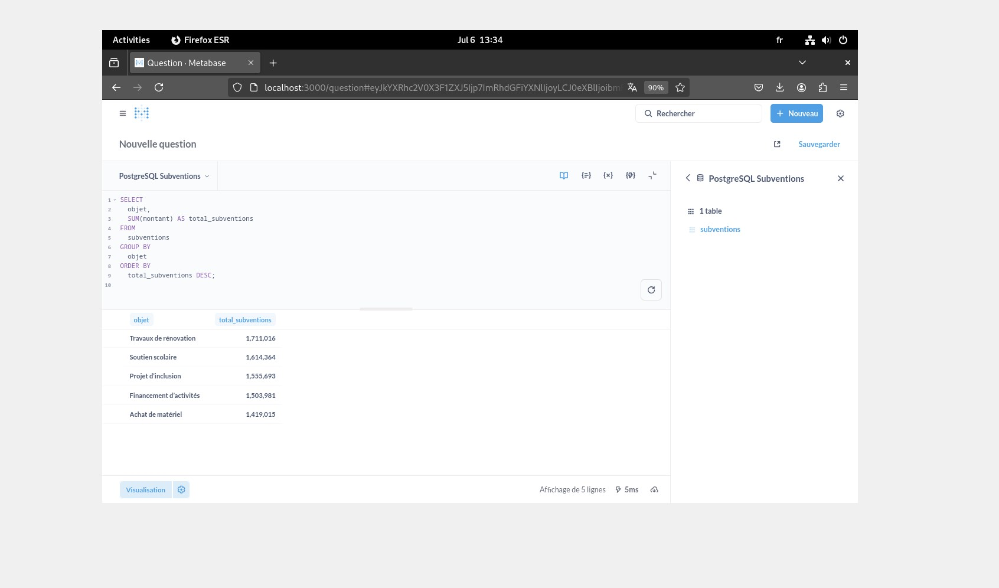
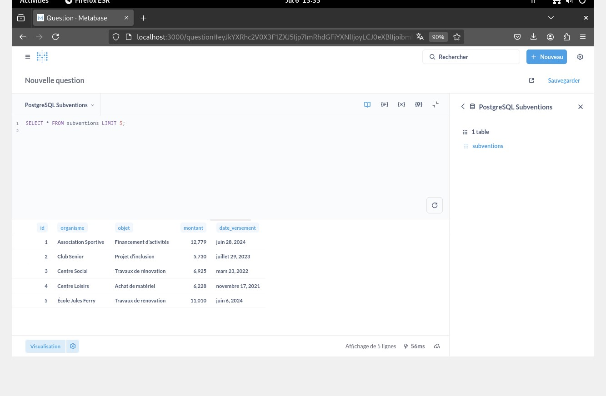

Datavisualisation – Metabase & PostgreSQL (Docker Compose)
 





Subventions : dashboard Metabase dockerisé
- Catégorie : Application / DataViz
- Stack : Docker Compose, PostgreSQL 15, Metabase
- Contexte : VM Debian 12 (local)
- Livrables : BDD de démo, questions Metabase, dashboard, scripts de sauvegarde
Mise en place d’une chaîne locale de datavisualisation pour suivre les subventions (montants, saisonnalités, répartitions par organisme et finalité). L’infra est décrite en Docker Compose, les données sont injectées via SQL, et les tableaux de bord sont partagés depuis Metabase.
Objectif : avoir un environnement jetable et reproductible (infra locale “as code”). Deux services : postgres + metabase, volumes persistants, même réseau Docker.
# docker-compose.yml (extrait simplifié)
version: "3.8"
services:
db:
image: postgres:15
environment:
POSTGRES_USER: postgres
POSTGRES_PASSWORD: postgres
POSTGRES_DB: subventions_db
ports: ["5432:5432"]
volumes:
- pgdata:/var/lib/postgresql/data
- ./sql:/docker-entrypoint-initdb.d
restart: unless-stopped
metabase:
image: metabase/metabase:latest
ports: ["3000:3000"]
depends_on: [db]
environment:
MB_DB_TYPE: postgres
MB_DB_DBNAME: subventions_db
MB_DB_PORT: 5432
MB_DB_HOST: db
MB_DB_USER: postgres
MB_DB_PASS: postgres
volumes:
- metabase-data:/metabase-data
restart: unless-stopped
volumes:
pgdata:
metabase-data:
Lancement : docker compose up -d puis accès à Metabase
sur http://localhost:3000.
Schéma minimaliste : table subventions (id, organisme,
objet, montant, date_versement), alimentée par
un script SQL étendu pour simuler plusieurs années et organismes.
Import :
# (si nécessaire) docker cp extended_subventions.sql dans ./sql/
docker compose exec -T db psql -U postgres -d subventions_db \
-f /docker-entrypoint-initdb.d/extended_subventions.sql
Dans Metabase : connexion à la base, typage des colonnes (date, nombre), création des “Questions” puis assemblage en Dashboard (évolution mensuelle, top organismes, répartition par finalité, etc.).
Stratégie simple : dump quotidien + rétention 7 jours. Script stocké côté hôte, exécuté via cron.
#!/usr/bin/env bash
set -euo pipefail
STAMP=$(date +%Y%m%d_%H%M)
OUT="backups/subventions_${STAMP}.sql"
mkdir -p backups
# Dump de la base "subventions_db"
docker compose exec -T db pg_dump -U postgres subventions_db > "$OUT"
# Rétention 7 jours
find backups -type f -name "subventions_*.sql" -mtime +7 -delete
echo "Backup OK -> $OUT"
# Cron (exemple) : tous les jours à 02h15
15 2 * * * /bin/bash /chemin/vers/backup.sh >> /chemin/vers/backup.log 2>&1
# Restauration
docker compose exec -T db psql -U postgres -d subventions_db < backups/subventions_YYYYMMDD_HHMM.sql
- Variables d’env. via fichier
.env(éviter les secrets en clair). - Volumes persistants (
pgdata,metabase-data) pour l’état. - Logs :
docker compose logs -f db|metabase, et export si besoin. - Accès Metabase restreint au LAN / reverse-proxy avec auth si exposition.
- Dashboard sur l’évolution mensuelle, les Top organismes et la répartition par finalité.
- Pipeline reproductible (Compose) + dataset de démonstration.
- Scripts d’initialisation et de sauvegarde documentés.